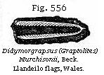
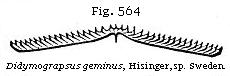
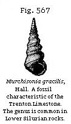

{kind=link}

The Student’s Elements of Geology
Classification of the Silurian Rocks. — Ludlow Formation and Fossils. — Bone-bed of the Upper Ludlow. — Lower Ludlow Shales with Pentamerus. — Oldest known Remains of fossil Fish. — Table of the progressive Discovery of Vertebrata in older Rocks. — Wenlock Formation, Corals, Cystideans and Trilobites. — Llandovery Group or Beds of Passage. — Lower Silurian Rocks. — Caradoc and Bala Beds. — Brachiopoda. — Trilobites. — Cystideæ. — Graptolites. — Llandeilo Flags. — Arenig or Stiper-stones Group. — Foreign Silurian Equivalents in Europe. — Silurian Strata of the United States. — Canadian Equivalents. — Amount of specific Agreement of Fossils with those of Europe.
Classification of the Silurian Rocks.—We come next in descending order to that division of Primary or Palæozoic rocks which immediately underlie the Devonian group or Old Red Sandstone. For these strata Sir Roderick Murchison first proposed the name of Silurian when he had studied and classified them in that part of Wales and some of the contiguous counties of England which once constituted the kingdom of the Silures, a tribe of ancient Britons. The following table will explain the two principal divisions, Upper and Lower, of the Silurian rocks, and the minor subdivisions usually adopted, comprehending all the strata originally embraced in the Silurian system by Sir Roderick Murchison. The formations below the Arenig or Stiper-stones group are treated of in the next chapter, when the “Primordial” or Cambrian group is described.
| UPPER SILURIAN ROCKS. | |
| Thickness in feet |
|
| 1. LUDLOW
FORMATION: a. Upper Ludlow beds |
780 |
| b. Lower Ludlow beds: | 1,050 |
| 2. WENLOCK
FORMATION: a. Wenlock limestone and shale |
above 4,000 |
| b. Woolhope limestone and shale, and Denbighshire grits: | |
| 3. LLANDOVERY
FORMATION (Beds of passage between Upper and Lower Silurian): a. Upper Llandovery (May-Hill beds): |
800 |
| b. Lower Llandovery: | 600–1,000 |
| LOWER SILURIAN ROCKS. | |
| 1. BALA AND CARADOC BEDS, including volcanic rocks: | 12,000 |
| 2. LLANDEILO FLAGS, including volcanic rocks: | 4,500 |
| 3. ARENIG OR STIPER-STONES GROUP, including volcanic rocks: | above 10,000 |
1. Ludlow Formation.—This member of the Upper Silurian group, as will be seen by above table, is of great thickness, and subdivided into two parts—the Upper Ludlow and the Lower Ludlow. Each of these may be distinguished near the town of Ludlow, and at other places in Shropshire and Herefordshire, by peculiar organic remains; but out of more than 500 species found in the Ludlow formation as a whole, not more than five species per hundred are common to the overlying Devonian. The student may refer to the excellent tables given in the last edition of Sir R. Murchison’s Siluria for a list of the organic remains of all classes distributed through the different subdivisions of the Upper and Lower Silurian.
a. Upper Ludlow: Downton Sandstone.—At the top of this subdivision there occur beds of fine-grained yellowish sandstone and hard reddish grits which were formerly referred by Sir R. Murchison to the Old Red Sandstone, under the name of “Tilestones.” In mineral character this group forms a transition from the Silurian to the Old Red Sandstone, the strata of both being conformable; but it is now ascertained that the fossils agree in great part specifically, and in general character entirely, with those of the underlying Upper Ludlow rocks. Among these are Orthoceras bullatum, Platyschisma helicites, Bellerophon trilobatus, Chonetes lata, etc., with numerous defenses of fishes.
These beds, therefore, now generally called the “Downton Sandstone,” are classed as the newest member of the Upper Silurian. They are well seen at Downton Castle, near Ludlow, where they are quarried for building, and at Kington, in Herefordshire. In the latter place, as well as at Ludlow, crustaceans of the genera Pterygotus (for genus see Fig. 504) and Eurypterus are met with.
Bone-bed of the Upper Ludlow.—At the base of the Downton sandstones there occurs a bone-bed which deserves especial notice as affording the most ancient example of fossil fish occurring in any considerable quantity. It usually consists of one or two thin layers of brown bony fragments near the junction of the Old Red Sandstone and the Ludlow rocks, and was first observed by Sir R. Murchison near the town of Ludlow, where it is three or four inches thick. It has since been traced to a distance of 45 miles from that point into Gloucestershire and other counties, and is commonly not more than an inch thick, but varies to nearly a foot. Near Ludlow two bone-beds are observable, with 14 feet of
intervening strata full of Upper Ludlow fossils.* At that point immediately above the upper fish-bed numerous small globular bodies have been found, which were determined by Dr. Hooker to be the sporangia of a cryptogamic land-plant, probably lycopodiaceous.
Most of the fish have been referred by Agassiz to his placoid order, some of them to the genus Onchus, to which the spine (Fig. 524) and the minute scales (Fig. 525) are supposed to belong. It has been suggested, however, that Onchus may be one of those Acanthodian fish referred by Agassiz to his Ganoid order, which are so characteristic of the base of the Old Red Sandstone in Forfarshire, although the species of the Old Red are all different from these of the Silurian beds now under consideration.
The jaw and teeth of another predaceous genus (Fig. 526) have also been detected, together with some specimens of Pteraspis Ludensis. As usual in bone-beds, the teeth and bones are, for the most part, fragmentary and rolled.
Grey Sandstone and Mudstone, etc.—The next subdivision of the Upper Ludlow consists of grey calcareous sandstone, or very commonly a micaceous stone, decomposing into soft mud, and contains, besides the shells mentioned aon page 459, Lingula cornea, Orthis orbicularis, a round variety of O. elegantula, Modiolopsis platyphylla, Grammysia cingulata, all characteristic of the Upper Ludlow. The lowest or mud-stone beds contain Rhynchonella navicula (Fig. 528), which is common to this bed and the Lower Ludlow. As usual in Palæozoic strata older than the coal, the brachiopodous mollusca greatly outnumber the lamellibranchiate (see p. 470); but the latter are by no means unrepresented. Among other genera, for example, we observe Avicula and
* Murchison’s Siluria, p. 140.
Pterinea, Cardiola, Ctenodonta (sub-genus of Nucula), Orthonota, Modiolopsis, and Palæarca.
Some of the Upper Ludlow sandstones are ripple-marked, thus affording evidence of gradual deposition; and the same may be said of the accompanying fine argillaceous shales, which are of great thickness, and have been provincially named “mud-stones.” In some of these shales stems of crinoidea are found in an erect position, having evidently become fossil on the spots where they grew at the bottom of the sea. The facility with which these rocks, when exposed to the weather, are resolved into mud, proves that, notwithstanding their antiquity, they are nearly in the state in which they were first thrown down.
b. Lower Ludlow Beds.—The chief mass of this formation consists of a dark grey argillaceous shale with calcareous concretions, having a maximum thickness of 1000 feet. In some places, and especially at Aymestry, in Herefordshire, a subcrystalline and argillaceous limestone, sometimes 50 feet thick, overlies the shale. Sir R. Murchison therefore classes this Aymestry limestone as holding an intermediate position between the Upper and Lower Ludlow, but Mr. Lightbody remarks that at Mocktrie, near Leintwardine, the Lower Ludlow shales, with their characteristic fossils, occur both above and below a similar limestone. This limestone around Aymestry and Sedgeley is distinguished by the abundance of Pentamerus Knightii, Sowerby (Fig. 529), also found in the Lower Ludlow and Wenlock shale. This genus of brachiopoda was first found in Silurian strata, and is exclusively a palæozoic form. The name was derived from pente, five, and meros, a part, because both valves are divided by a central septum, making four chambers, and in one valve
the septum itself contains a small chamber, making five. The size of these septa is enormous compared with those of any other brachiopod shell; and they must nearly have divided the animal into two equal halves; but they are, nevertheless, of the same nature as the septa or plates which are found in the interior of Spirifera, Terebratula, and many other shells of this order. Messrs. Murchison and De Verneuil discovered this species dispersed in myriads through a white limestone of Upper Silurian age, on the banks of the Is, on the eastern flank of the Urals in Russia, and a similar species is frequent in Sweden.
Three other abundant shells in the Aymestry limestone are, first, Lingula Lewisii (Fig. 530); second, Rhynchonella Wilsoni, Sowerby (Fig. 531), which is also common to the Lower Ludlow and Wenlock limestone; third, Atrypa reticularis, Linn. (Fig. 532), which has a very wide range, being found in every part of the Upper Silurian system, and even ranging up into the Middle Devonian series.
The Aymestry Limestone contains many shells, especially brachiopoda, corals, trilobites, and other fossils, amounting on the whole to 74 species, all except three or four being common to the beds either above or below.
The Lower Ludlow Shale contains, among other fossils, many large cephalopoda not known in newer rocks, as the Phragmoceras of Broderip, and the Lituites of Breynius (see Figs. 533, 534). The latter is partly straight and partly convoluted in a very flat spire. The
Orthoceras Ludense (Fig. 535), as well as the cephalopod last mentioned, occurs in this member of the species.
A species of Graptolite, G. priodon, Bronn (Fig. 545), occurs plentifully in the Lower Ludlow. This fossil, referred, though somewhat doubtfully, to a form of hydrozoid or sertularian polyp, has not yet been met with in strata above the Silurian.
Star-fish, as Sir R. Murchison points out, are by no means rare in the Lower Ludlow rock. These fossils, of which six extinct genera are now known in the Ludlow series, represented by 18 species, remind us of various living forms now found in our British seas, both of the families Asteriadæ and Ophiuridæ.
Oldest known Fossil Fish.—Until 1859 there was no example of a fossil fish older than the bone-bed of the Upper Ludlow, but in that year a specimen of Pteraspis was found at Church Hill, near Leintwardine, in Shropshire, by Mr. J. E. Lee of Caerleon, F.G.S., in shale below the Aymestry limestone, associated with fossil shells of the Lower Ludlow formation—shells which differ considerably from those characterising the Upper Ludlow already described. This discovery is of no small interest as bearing on the theory of progressive development, because, according to Professor Huxley, the genus Pteraspis is allied to the sturgeon, and therefore by no means of low grade in the piscine class.
It is a fact well worthy of notice that no remains of vertebrata have yet been met with in any strata older than the Lower Ludlow.
When we reflect on the hundreds of Mollusks, Echinoderms,
Trilobites, Corals, and other fossils already obtained from more ancient Silurian formations, Upper, Middle, and Lower, we may well ask whether any set of fossiliferous rocks newer in the series were ever studied with equal diligence, and over so vast an area, without yielding a single ichthyolite. Yet we must hesitate before we accept, even on such evidence, so sweeping a conclusion, as that the globe, for ages after it was inhabited by all the great classes of invertebrata, remained wholly untenanted by vertebrate animals.
| Year | Formations | Geographical localities | |
| Mammalia | 1798 | Upper Eocene | Paris (Gypsum of Montmartre).1 |
| 1818 | Lower Oolite | Stonesfield.2 | |
| 1847 | Upper Trias | Stuttgart.3 | |
| Aves | 1782 | Upper Eocene | Paris (Gypsum of Montmartre).4 |
| 1839 | Lower Eocene | Isle of Sheppey (London Clay).5 | |
| 1854 | Lower Eocene | Woolwich Beds.6 | |
| 1855 | Lower Eocene | Mendon (Plastic Clay).7 | |
| 1858 | Chloritic Series, or Upper Greensand | Cambridge.8 | |
| 1863 | Upper Oolite | Solenhofen.9 | |
| Reptilia | 1710 | Permian (or Zechstein) | Thuringia.10 |
| 1844 | Carboniferous | Saarbrück, near Trèves.11 | |
| Pisces | 1709 | Permian (or Kupferschiefer) | Thuringia.12 |
| 1793 | Carboniferous (Mountain Limestone) | Glasgow.13 | |
| 1828 | Devonian | Caithness.14 | |
| 1840 | Upper Ludlow | Ludlow.15 | |
| 1859 | Lower Ludlow | Leintwardine.16 |
1. George Cuvier, Bulletin Soc. Philom. xx.
2. In 1818, Cuvier, visiting the Museum of Oxford, decided on the
mammalian character of a jaw from Stonesfield. See also p. 347.
3. Prof. Plieninger. See p.
368.
4. Cuvier, Ossemens Foss. Art. “Oiseaux.”
5. Prof. Owen, Geol. Trans., 2nd series, vol. vi, p. 203, 1839.
6. Upper part of the Woolwich beds. Prestwich, Quart. Geol. Journ.,
vol. x, p. 157.
7. Gastornis Parisiensis. Owen, Quart. Geol. Journ., vol.
xii, p. 204, 1856.
8. Coprolitic bed, in the Upper Greensand. See p. 299.
9. The Archæopteryx macrura, Owen. See p. 338.
10. The fossil monitor of Thuringia (Protosaurus Speneri, V.
Meyer) was figured by Spener of Berlin in 1810. (Miscel.
Berlin.)
11. See p. 406.
12. Memorabilia Saxoniæ Subterr., Leipsic, 1709.
13. History of Rutherglen by Rev. David Ure, 1793.
14. Sedgwick and Murchison, Geol. Trans., 2nd series, vol. ii, p.
141, 1828.
15. Sir R. Murchison. See p. 459.
16. See p. 461.
Obs.—The evidence derived from foot-prints, though often to be
relied on, is omitted in the above table, as being less exact than
that founded on bones and teeth.
In the preceding Table a few dates are set before the reader of the discovery of different classes of animals in ancient rocks, to enable him to perceive at a glance how
gradual has been our progress in tracing back the signs of vertebrata to formations of high antiquity. Such facts may be useful in warning us not to assume too hastily that the point which our retrospect may have reached at the present moment can be regarded as fixing the date of the first introduction of any one class of beings upon the earth.
2. Wenlock Formation.—We next come to the Wenlock formation, which has been divided (see Table, p. 458) into Wenlock limestone, Wenlock shale, and Woolhope limestone and Denbighshire grits.
a. Wenlock Limestone.—This limestone, otherwise well known to collectors by the name of the Dudley Limestone, forms a continuous ridge in Shropshire, ranging for about 20 miles from S.W. to N.E., about a mile distant from the nearly parallel escarpment of the Aymestry limestone. This ridgy prominence is due to the solidity of the rock, and to the softness of the shales above and below it. Near Wenlock it consists of thick masses of grey subcrystalline limestone, replete with corals, encrinites, and trilobites. It is essentially of a concretionary nature; and the concretions, termed “ball-stones” in Shropshire, are often enormous, even 80 feet in diameter. They are of pure carbonate of lime, the surrounding rock being more or less argillaceous* Sometimes in the Malvern Hills this limestone, according to Professor Phillips, is oolitic.
Among the corals, in which this formation is so rich, 53 species being known, the “chain-coral,” Halysites catenularius (Fig. 536), may be pointed out as one very easily recognised, and widely spread in Europe, ranging through all parts of the Silurian group, from the Aymestry limestone to near the bottom of the Llandeilo rocks. Another coral, the Favosites Gothlandica (Fig. 537), is also met with in profusion in large hemispherical masses, which break up into columnar and prismatic fragments, like that here figured (Fig. 537, b). Another common form in the
* Murchison’s Siluria, chap. vi.

Wenlock limestone is the Omphyma turbinatum (Fig. 538), which, like many of its modern companions, reminds us of some cup-corals; but all the Silurian genera belong to the palæozoic type before mentioned (p. 432), exhibiting the quadripartite arrangement of the septalamellæ within the cup.
Among the numerous Crinoids, several peculiar species of Cyathocrinus (for genus see Figs. 478, 479) contribute their calcareous stems, arms, and cups towards the composition of the Wenlock limestone. Of Cystideans there are a few very remarkable forms, most of them peculiar to the Upper Silurian formation, as, for example, the Pseudocrinites, which was furnished with pinnated fixed arms,* as represented in Fig. 539.
The Brachiopoda are, many of them, of the same species as those of the Aymestry limestone; as, for example, Atrypa reticularis (Fig. 532), and Strophomena depressa (Fig. 540); but the latter species ranges also from the Ludlow rocks, through the Wenlock shale, to the Caradoc Sandstone.
The crustaceans are represented almost exclusively by Trilobites, which are very conspicuous, 22 being peculiar. The Calymene Blumenbachii (Fig. 541), called the ”Dudley Trilobite,” was known to collectors long before its true place in the animal kingdom was ascertained. It is often found coiled up like the common Oniscus or wood-louse, and this is so usual a circumstance among certain genera of trilobites as to lead us to conclude that they must have habitually resorted to this mode of protecting themselves when alarmed. The other common species is the Phacops caudatus (Asaphus caudatus), Brong. (see Fig. 542), and this is conspicuous for its large
* E. Forbes, Mem. Geol. Surv., vol. ii, p. 496.
size and flattened form. Sphærexochus mirus (Fig. 543) is almost a globe when rolled up, the forehead or glabellum of this species being extremely inflated. The Homalonotus, a form of Trilobite in which the tripartite division of the dorsal crust is almost lost (see Fig. 544), is very characteristic of this division of the Silurian series.
Wenlock Shale.—This, observes Sir R. Murchison, is infinitely the largest and most persistent member of the Wenlock formation, for the limestone often thins out and disappears. The shale, like the Lower Ludlow, often contains elliptical concretions of impure earthy limestone.
In the Malvern district it is a mass of finely levigated argillaceous matter, attaining, according to Professor Phillips, a thickness of 640 feet, but it is sometimes more than 1000 feet thick in Wales, and is worked for flag-stones and slates. The prevailing fossils, besides corals and trilobites, and some crinoids, are several small species of Orthis, Cardiola, and numerous thin-shelled species of Orthoceratites.
About six species of Graptolite, a peculiar group of sertularian fossils before alluded to (p. 463) as being confined to Silurian rocks, occur in this shale. Of fossils of this genus, which is very characteristic of the Lower Silurian, I shall again speak in the sequel (p. 474).
b. Woolhope Beds.—Though not always recognised as a separate subdivision of the Wenlock, the Woolhope beds, which underlie the Wenlock shale, are of great importance. Usually they occur as massive or nodular limestones, underlaid by a fine shale or flag-stone; and in other cases, as in the noted Denbighshire sandstones, as a coarse grit of very great thickness. This grit forms mountain ranges through North and South Wales, and is generally marked by the great sterility of the soil where it
occurs. It contains the usual Wenlock fossils, but with the addition of some common in the uppermost Ludlow rock, such as Chonetes lata and Bellerophon trilobatus. The chief fossils of the Woolhope limestone are Illænus Barriensis, Homalonotus delphinocephalus (Fig. 544), Strophomena imbrex, and Rhynchonella Wilsoni (Fig. 531). The latter attains in the Woolhope beds an unusual size for the species, the specimens being sometimes twice as large as those found in the Wenlock limestone.
In some places below the Wenlock formation there are shales of a pale or purple colour, which near Tarannon attain a thickness of about 1000 feet; they can be traced through Radnor and Montgomery to North Wales, according to Messrs. Jukes and Aveline. By the latter geologist they have been identified with certain shales above the May-Hill Sandstone, near Llandovery, but, owing to the extreme scarcity of fossils, their exact position remains doubtful.
3. Llandovery Group—Beds of Passage.—We now come to beds respecting the classification of which there has been much difference of opinion, and which in fact must be considered as beds of passage between Upper and Lower Silurian. I formerly adopted the plan of those who class them as Middle Silurian, but they are scarcely entitled to this distinction, since after about 1400 Silurian species have been compared the number peculiar to the group in question only gives them an importance equal to such minor subdivisions as the Ludlow or Bala groups. I therefore prefer to regard them as the base of the Upper Silurian, to which group they are linked by more than twice as many species as to the Lower Silurian. By this arrangement the line of demarkation between the two great divisions, though confessedly arbitrary, is less so than by any other. They are called Llandovery Rocks, from a town in South Wales, in the neighbourhood of which they are well developed, and where, especially at a hill called Noeth Grug, in spite of several faults, their relations to one another can be clearly seen.
a. Upper Llandovery or May-Hill Sandstone.—The May-Hill group, which has also been named ”Upper Llandovery,” by Sir R. Murchison, ranges from the west of the Longmynd to Builth, Llandovery, and Llandeilo, and to the sea in Marlow’s Bay, where it is seen in the cliffs. It consists of brownish and yellow sandstones with calcareous nodules, having sometimes a conglomerate at the base derived from the waste of the Lower Silurian rocks. These May-Hill beds were formerly supposed to be part of the Caradoc formation, but their true position was determined by Professor
Sedgwick* to be at the base of the Upper Silurian proper. The more calcareous portions of the rock have been called the Pentamerus limestone, because Pentamerus oblongus (Fig. 546) is very abundant in them. It is usually accompanied by P. (Stricklandinia) lirata (Fig. 547); both forms have a wide geographical range, being also met with in the same part of the Silurian series in Russia and the United States.
About 228 species of fossils are known in the May-Hill division, more than half of which are Wenlock species. They consist of trilobites of the genera Illænus and Calymene; Brachiopods of the genera Orthis, Atrypa, Leptæna, Pentamerus, Strophomena, and others; Gasteropods of the genera Turbo, Murchisonia (for genus, see Fig. 567), and Bellerophon; and Pteropods of the genus Conularia. The Brachiopods, of which there are 66 species, are almost all Upper Silurian.
Among the fossils of the May-Hill shelly sandstone at Malvern, Tentaculites annulatus (Fig. 548), an annelid, probably allied to Serpula, is found.
Lower Llandovery Rocks.—Below the May-Hill Group are the Lower Llandovery Rocks, which consist chiefly of hard slaty rocks, and beds of conglomerate from 600 to 1000 feet in thickness. The fossils, which are somewhat rare in the lower beds, consist of 128 known species, only eleven of which are peculiar, 83 being
* Quart. Geol. Journ., vol. iv, p. 215, 1853.
common to the May-Hill group above, and 93 common to the rocks below. Stricklandinia (Pentamerus) levis, which is common in the Lower Llandovery, becomes rare in the Upper, while Pentamerus oblongus (Fig. 546), which is the characteristic shell of the Upper Llandovery, occurs but seldom in the Lower.
The Lower Silurian has been divided into, first, the Bala Group; second, the Llandeilo flags; and, third, the Arenig or Lower Llandeilo formation.
Bala and Caradoc Beds.—The Caradoc sandstone was originally so named by Sir R. I. Murchison from the mountain called Caer Caradoc, in Shropshire; it consists of shelly sandstones of great thickness, and sometimes containing much calcareous matter. The rock is frequently laden with the beautiful trilobite called by Murchison Trinucleus Caractaci (see Fig. 553), which ranges from the base to the summit of the formation, usually accompanied by Strophomena grandis (see Fig. 551), and Orthis vespertilio (Fig. 550), with many other fossils.
Brachiopoda.—Nothing is more remarkable in these beds, and in the Silurian strata generally of all countries, than the preponderance of brachiopoda over other forms of mollusca. Their proportional numbers can by no means be explained by supposing them to have inhabited seas of great depth, for the contrast between the palæozoic and the present state of things has not been essentially altered by the late discoveries made in our deep-sea dredgings. We find the living brachiopoda so rare as to form about one forty-fourth of the whole bivalve fauna, whereas in the Lower Silurian rocks of which we are now about to treat, and where the brachiopoda reach their maximum, they are represented by more than twice as many species as the Lamellibranchiate bivalves.
There may, indeed, be said to be a continued decrease of the proportional number of this lower tribe of mollusca as we proceed from older to newer rocks. In the British Devonian, for example, the Brachiopoda number 99, the Lamellibranchiata 58; while in the Carboniferous their proportions are more than reversed, the Lamellibranchiata numbering 334 species, and the Brachiopoda only 157. In the Secondary or Cainozoic formations the preponderance of the higher grade of bivalves becomes more and more marked, till in the tertiary strata it approaches that observed in the living creation.
While on this subject, it may be useful to the student to know that a Brachiopod differs from ordinary bivalves, mussels, cockles, etc., in being always equal-sided and never quite equi-valved; the form of each valve being symmetrical, it may be divided into two equal parts by a line drawn from the apex to the centre of the margin.
Trilobites.—In the Bala and Caradoc beds the trilobites reach their maximum, being represented by 111 species referred to 23 genera.
Burmeister, in his work on the organisation of trilobites, supposes that they swam at the surface of the water in the open sea and near coasts, feeding on smaller marine animals, and to have had the power of rolling themselves into a ball as a defence against injury. He was also of opinion that they underwent various transformations analogous to those of living crustaceans. M. Barrande, author of an admirable work on the Silurian rocks of Bohemia, confirms the doctrine of their metamorphosis, having traced more than twenty species through different stages of growth from the young state just after its escape from the egg to the adult form. He has followed some of them from a point in which they show no eyes, no joints, or body rings, and no distinct tail, up to the complete form with the full number of segments. This change is brought about before the animal has attained a tenth part of its full dimensions, and hence such minute and delicate specimens are rarely met with. Some of his figures of the metamorphoses of the common Trinucleus are copied in Figs. 552 and 553. It was not till 1870 that Mr. Billings was enabled, by means of a specimen found in Canada, to prove that the trilobite was provided with eight legs.
It has been ascertained that a great thickness of slaty and crystalline rocks of South Wales, as well as those of Snowdon and Bala, in North Wales, which were first supposed to be of older date than the Silurian sandstones and mudstones of
Shropshire, are in fact identical in age, and contain the same organic remains. At Bala, in Merionethshire, a limestone rich in fossils occurs, in which two genera of star-fish, Protaster and Palæaster, are found; the fossil specimen of the latter (Fig. 554) being almost as uncompressed as if found just washed up on the sea-beach. Besides the star-fish there occur abundance of those peculiar bodies called Cystideæ. They are the Sphæronites of old authors, and were considered by Professor E. Forbes as intermediate between the crinoids and echinoderms. The Echinosphæronite here represented (Fig. 555) is characteristic of the Caradoc beds in Wales, and of their equivalents in Sweden and Russia.
With it have been found several other genera of the same family, such as Sphæronites, Hemicosmites, etc. Among the mollusca are Pteropods of the genus Conularia of large size (for genus, see Fig. 518). About eleven species of Graptolite are reckoned as belonging to this formation; they are chiefly found in peculiar localities where
black mud abounded. The formation, when traced into South Wales and Ireland, assumes a greatly altered mineral aspect, but still retains its characteristic fossils. The known fauna of the Bala group comprises 565 species, 352 of which are peculiar, and 93, as before stated, are common to the overlying Llandovery rocks. It is worthy of remark that, when it occurs under the form of trappean tuff (volcanic ashes of De la Beche), as in the crest of Snowdon, the peculiar species which distinguish it from the Llandeilo beds are still observable. The formation generally appears to be of shallow-water origin, and in that respect is contrasted with the group next to be described. Professor Ramsay estimates the thickness of the Bala Beds, including the contemporaneous volcanic rocks, stratified and unstratified, as being from 10,000 to 12,000 feet.
Llandeilo Flags.—The Lower Silurian strata were originally divided by Sir R. Murchison into the upper group already described, under the name of Caradoc Sandstone, and a lower one, called, from a town in Carmarthenshire, the Llandeilo flags. The last mentioned strata consist of dark-coloured micaceous flags, frequently calcareous, with a great thickness of shales, generally black, below them. The same beds are also seen at Builth, in Radnorshire, where they are interstratified with volcanic matter.
A still lower part of the Llandeilo rocks consists of a black carbonaceous slate of great thickness, frequently containing sulphate of alumina, and sometimes, as in Dumfriesshire, beds of anthracite. It has been conjectured that this carbonaceous matter may be due in great measure to large quantities of imbedded animal remains, for the number of Graptolites included in these slates was certainly very great. In
Great Britain eleven genera and about 40 species of Graptolites occur in the Llandeilo flags and underlying Arenig beds. The double Graptolites, or those with two rows of cells, such as Diplograpsus (Fig. 557), are conspicuous.
The brachiopoda of the Llandeilo flags, which number 47 species, are in the main the same as those of the Caradoc Sandstone, but the other mollusca are in great part of different species.
In Europe generally, as, for example, in Sweden and Russia, no shells are so characteristic of this formation as Orthoceratites, usually of great size, and with a wide siphuncle placed on one side instead of being central (see Fig. 560).
Among other Cephalopods in the Llandeilo flags is Cyrtoceras; in the same beds also are found Bellerophon (see Fig. 488) and some Pteropod shells (Conularia, Theca, etc.), also in spots where sand abounded, lamellibranchiate bivalves of large size. The Crustaceans were plentifully represented by the Trilobites, which appear to have swarmed in the Silurian seas just as crabs and shrimps do in our own; no less than 263 species have been found in the British Silurian fauna. The genera Asaphus (Fig. 561), Ogygia (Fig. 562),
and Trinucleus (Figs. 552 and 553) form a marked feature of the rich and varied Trilobitic fauna of this age.
Beneath the black slates above described of the Llandeilo formation, Graptolites are still found in great variety and abundance, and the characteristic genera of shells and trilobites of the Lower Silurian rocks are still traceable downward, in Shropshire, Cumberland, and North and South Wales, through a vast depth of shaly beds, in some districts interstratified with trappean formations of contemporaneous origin; these consist of tuffs and lavas, the tuffs being formed of such materials as are ejected from craters and deposited immediately on the bed of the ocean, or washed into it from the land. According to Professor Ramsay, their thickness is about 3300 feet in North Wales, including those of the Lower Llandeilo. The lavas are feldspathic, and of porphyritic structure, and, according to the same authority, of an aggregate thickness of 2500 feet.
Arenig or Stiper-Stones Group (Lower Llandeilo of Murchison).—Next in the descending order are the shales and sandstones in which the quartzose rocks called Stiper-Stones in Shropshire occur. Originally these Stiper-Stones were only known as arenaceous quartzose strata in which no organic remains were conspicuous, except the tubular burrows of annelids (see Fig. 563, Arenicolites linearis), which are remarkably common in the Lowest Silurian in Shropshire, and in the State of New York, in America. They have already been alluded to as occurring by thousands in the Silurian strata unconformably overlying the Cambrian, in the mountain of Queenaig, in Sutherlandshire (Fig. 82). I have seen similar burrows now made on the retiring of the tides in the sands of the Bristol Channel, near Minehead, by lob-worms which are dug out by fishermen and used as bait. When the term Silurian was given by Sir R. Murchison, in 1835, to the whole series, he considered the Stiper-Stones as the base of the Silurian system, but no fossil fauna had then been obtained, such as could alone enable the geologist to draw a line between this member of the series and the Llandeilo flags above, or a vast thickness of rock below, which was seen to form the Longmynd hills, and was called ”unfossiliferous graywacke.” Professor Sedgwick had described, in
1843, strata now ascertained to be of the same age as largely developed in the Arenig mountain, in Merionethshire; and the Skiddaw slates in the Lake-District of Cumberland, studied by the same author, were of corresponding date, though the number of fossils was, in both cases, too few for the determination of their true chronological relations. The subsequent researches of Messrs. Sedgwick and Harkness, in Cumberland, and of Sir R. I. Murchison and the Government surveyors in Shropshire, have increased the species to more than sixty. These were examined by Mr. Salter, and shown in the third edition of ”Siluria” (p. 52, 1859) to be quite distinct from the fossils of the overlying Llandeilo flags. Among these the Obolella plumbea, Æglina binodosa, Ogygia Selwynii, and Didymograpsus geminus (Fig. 564), and D. Hirundo, are characteristic.
But, although the species are distinct, the genera are the same as those which characterise the Silurian rocks above, and none of the characteristic primordial or Cambrian forms, presently to be mentioned, are intermixed. The same may be said of a set of beds underlying the Arenig rocks at Ramsay Island and other places in the neighbourhood of St. David’s. These beds, which have only lately become known to us through the labours of Dr. Hicks,* present already twenty new species, the greater part of them allied generically to the Arenig rocks. This Arenig group may therefore be conveniently regarded as the base of the great Silurian system, a system which, by the thickness of its strata and the changes in animal life of which it contains the record, is more than equal in value to the Devonian, or Carboniferous, or other principal divisions, whether of primary or secondary date.
It would be unsafe to rely on the mere thickness of the strata, considered apart from the great fluctuations in organic life which took place between the era of the Llandeilo and that of the Ludlow formation, especially as the enormous pile of Silurian rocks observed in Great Britain (in Wales more particularly) is derived in great part from igneous action, and is not confined to the ordinary deposition of sediment from rivers or the waste of cliffs.
In volcanic archipelagoes, such as the Canaries, we see the most active of all known causes, aqueous and igneous, simultaneously at work to produce great results in a
* Trans. Brit. Assoc., 1866. Proc. Liverpool Geol. Soc., 1869.
comparatively moderate lapse of time. The outpouring of repeated streams of lava—the showering down upon land and sea of volcanic ashes—the sweeping seaward of loose sand and cinders, or of rocks ground down to pebbles and sand, by rivers and torrents descending steeply inclined channels—the undermining and eating away of long lines of sea-cliff exposed to the swell of a deep and open ocean—these operations combine to produce a considerable volume of superimposed matter, without there being time for any extensive change of species. Nevertheless, there would seem to be a limit to the thickness of stony masses formed even under such favourable circumstances, for the analogy of tertiary volcanic regions lends no countenance to the notion that sedimentary and igneous rocks 25,000, much less 45,000 feet thick, like those of Wales, could originate while one and the same fauna should continue to people the earth. If, then, we allow that about 25,000 feet of matter may be ascribed to one system, such as the Silurian, as above described, we may be prepared to discover in the next series of subjacent rocks a distinct assemblage of species, or even in great part of genera, of organic remains. Such appears to be the fact, and I shall therefore conclude with the Arenig beds my enumeration of the Silurian formations in Great Britain, and proceed to say something of their foreign equivalents, before treating of rocks older than the Silurian.
Silurian Strata of the Continent of Europe.—When we turn to the continent of Europe, we discover the same ancient series occupying a wide area, but in no region as yet has it been observed to attain great thickness. Thus, in Norway and Sweden, the total thickness of strata of Silurian age is considerably less than 1000 feet, although the representatives both of the Upper and Lower Silurian of England are not wanting there. In Russia the Silurian strata, so far as they are yet known, seem to be even of smaller vertical dimensions than in Scandinavia, and they appear to consist chiefly of the Llandovery group, or of a limestone containing Pentamerus oblongus, below which are strata with fossils corresponding to those of the Llandeilo beds of England. The lowest rock with organic remains yet discovered is ”the Ungulite or Obolus grit” of St. Petersburg, probably coeval with the Llandeilo flags of Wales.
The shales and grits near St. Petersburg, above alluded to, contain green grains in their sandy layers, and are in a singularly unaltered state, taking into account their high antiquity. The prevailing Brachiopods consist of the Obolus
or Ungulite of Pander, and a Siphonotreta (Figs. 565, 566). Notwithstanding the antiquity of this Russian formation, it should be stated that both of these genera of brachiopods have been also found in the Upper Silurian of England, i.e., in the Wenlock limestone.
Among the green grains of the sandy strata above-mentioned, Professor Ehrenberg announced in 1854 his discovery of remains of foraminifera. These are casts of the cells; and among five or six forms three are considered by him as referable to existing genera (e.g., Textularia, Rotalia, and Guttulina).
Silurian Strata of the United States.—The Silurian formations can be advantageously studied in the States of New York, Ohio, and other regions north and south of the great Canadian lakes. Here they are often found, as in Russia, nearly in horizontal position, and are more rich in well-preserved fossils than in almost any spot in Europe. In the State of New York, where the succession of the beds and their fossils have been most carefully worked out by the Government surveyors, the subdivisions given in the first column of the table below have been adopted.
| New York Names | British equivalents |
| 1. Upper Pentamerus
Limestone 2. Encrinal Limestone 3. Delthyris Shaly Limestone 4. Pentamerus and Tentaculite Limestones 5. Water Lime Group 6. Onondaga Salt Group 7. Niagara Group |
Upper Silurian (or Ludlow and Wenlock formations |
| 8. Clinton Group 9. Medina Sandstone 10. Oneida Conglomerate 11. Gray Sandstone |
Beds of Passage, Llandovery Group. |
| 12. Hudson River Group 13. Trenton Limestone 14. Black-River Limestone 15. Bird’s-eye Limestone 16. Chazy Limestone 17. Calciferous Sandstone |
Lower Silurian (or Caradoc and
Bala, Llandeilo and Arenig Formations). |
In the second column of the same table I have added the supposed British equivalents. All Palæontologists, European and American, such as MM. De Verneuil, D. Sharpe, Professor Hall, E. Billings, and others, who have entered upon this comparison, admit that there is a marked general correspondence in the succession of fossil forms, and even species, as we trace the organic remains downward from the highest to the lowest beds; but it is impossible to parallel each minor subdivision.
That the Niagara Limestone, over which the river of that name is precipitated at the great cataract, together with its underlying shales, corresponds to the Wenlock limestone and shale of England there can be no doubt. Among the species common to this formation in America and Europe are Calymene Blumenbachii, Homalonotus delphinocephalus (Fig. 544), with several other trilobites; Rhynchonella Wilsoni, Fig. 531, and Retzia cuneata; Orthis elegantula, Pentamerus galeatus, with many more brachiopods; Orthoceras annulatum, among the cephalopodous shells; and Favosites gothlandica, with other large corals.
The Clinton Group, containing Pentamerus oblongus and Stricklandinia, and related more nearly by its fossil species with the beds above than with those below, is the equivalent of the Llandovery Group or beds of passage.
The Hudson River Group, and the Trenton Limestone, agree palæontologically with the Caradoc or Bala group, containing in common with them several species of trilobites, such as Asaphus (Isotelus) gigas, Trinucleus concentricus (Fig. 553); and various shells, such as Orthis striatula, Orthis biforata (or O. lynx), O. porcata (O. occidentalis of Hall), and Bellerophon bilobatus. In the Trenton limestone occurs Murchisonia gracilis, Fig. 567, a fossil also common to the Llandeilo beds in England.
Mr. D. Sharpe, in his report on the mollusca collected by me from these strata in North America,* has concluded that the number of species common to the Silurian rocks
* Quart. Geol. Journ., vol. iv.
on both sides of the Atlantic is between 30 and 40 per cent; a result which, although no doubt liable to future modification, when a larger comparison shall have been made, proves, nevertheless, that many of the species had a wide geographical range. It seems that comparatively few of the gasteropods and lamellibranchiate bivalves of North America can be identified specifically with European fossils, while no less than two-fifths of the brachiopoda, of which my collection chiefly consisted, are the same. In explanation of these facts, it is suggested that most of the recent brachiopoda (especially the orthidiform ones) are inhabitants of deep water, and that they may have had a wider geographical range than shells living near shore. The predominance of bivalve mollusca of this peculiar class has caused the Silurian period to be sometimes styled ”the age of brachiopods.”
In Canada, as in the State of New York, the Potsdam Sandstone underlies the above-mentioned calcareous rocks, but contains a different suite of fossils, as will be hereafter explained. In parts of the globe still more remote from Europe the Silurian strata have also been recognised, as in South America, Australia, and India. In all these regions the facies of the fauna, or the types of organic life, enable us to recognise the contemporaneous origin of the rocks; but the fossil species are distinct, showing that the old notion of a universal diffusion throughout the ”primæval seas” of one uniform specific fauna was quite unfounded, geographical provinces having evidently existed in the oldest as in the most modern times.
{kind=link}
{kind=link}
{kind=link}
{kind=link}
{kind=link}
{kind=link}
{kind=link}
{kind=link}
{kind=link}
{kind=link}
{kind=link}